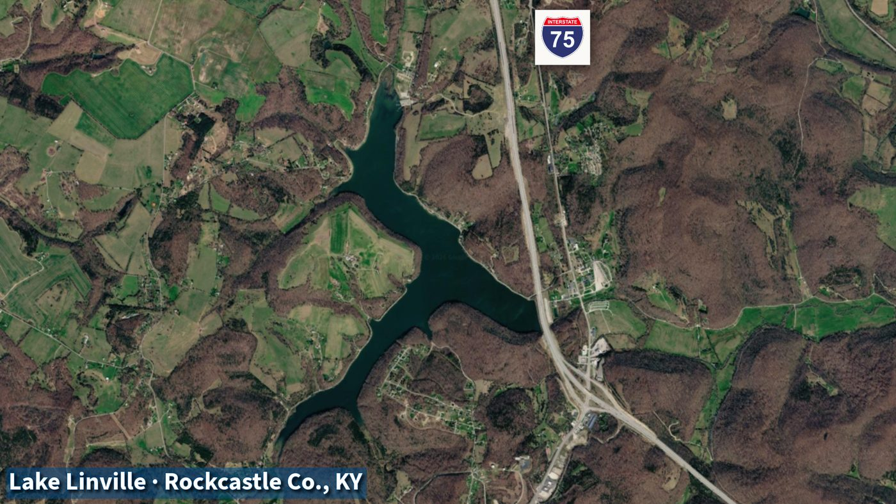
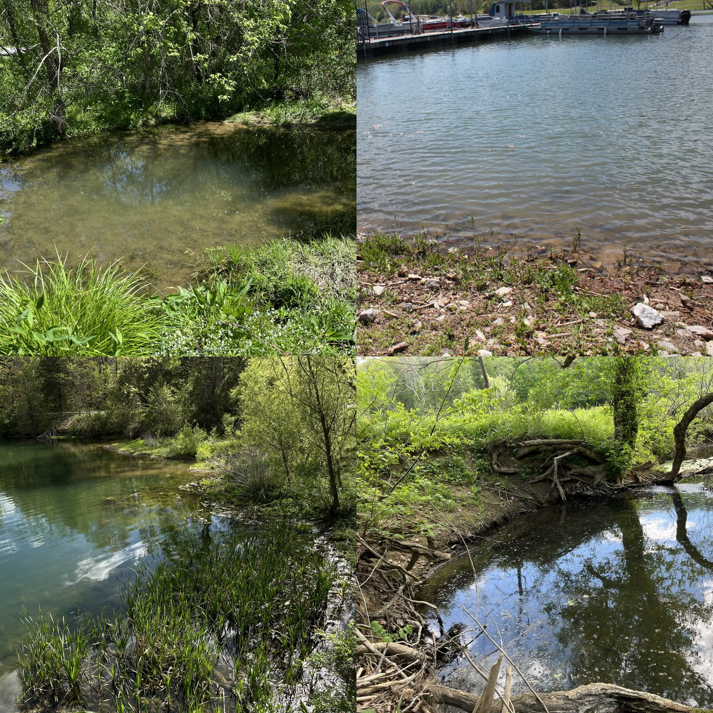

Lake Linville: A Field Investigation of Water Quality in Rural Kentucky
Will Miller, Justin N. Howard
Example project — adapted from a student research poster (rough draft) originally designed as a 24″×36″ printed poster.
Introduction
Water quality influences ecosystem health, human recreation, and drinking water treatment. Lakes can change over time due to weather, runoff, seasonal biology, shoreline activity, and watershed conditions. Because of these influences, regular monitoring is valuable.
This project asked a simple question: What can basic field tests reveal about the condition of Lake Linville?
By using accessible tools and careful observation, students can collect meaningful environmental data while learning the foundations of scientific investigation.
Abstract
Freshwater systems are essential for recreation, wildlife habitat, and public water supply. Lake Linville serves as an important regional resource and provides an excellent location for introductory environmental field study. The purpose of this project was to conduct a preliminary assessment of lake conditions using simple water-testing methods appropriate for an undergraduate student investigation. Field measurements and collected samples were used to examine temperature, pH, water clarity, and possible bacterial indicators. Additional water samples were retained for microscopy to observe suspended particles and aquatic microorganisms. Rather than relying on a single test, this project used multiple indicators to build a broader picture of site conditions. The investigation also emphasized proper sampling technique, field documentation, and interpretation of environmental observations. Results from this study provide baseline information, demonstrate the value of hands-on environmental science education, and highlight how local waters can be used as meaningful learning laboratories for future students.
Methods
Public records and environmental resources were reviewed to identify factors that may influence water quality at Lake Linville. Sources included publicly available regulatory records, geographic mapping tools, aerial imagery, and prior community concerns regarding lake conditions.
Google Earth was used to examine shoreline access, watershed features, tributary inputs, nearby infrastructure, and potential sampling locations.
Field samples were collected from accessible lake locations using clean, labeled containers. Site notes included date, time, weather, and visible water conditions. Basic water quality indicators were evaluated using introductory field methods:
- Temperature
- pH
- Water clarity (Secchi disk)
- E. coli screening samples
- Microscopy retention samples

Results
Testing was done at four selected locations and on tap water.
Public Record Findings
- Algae blooms occur when freshwater systems become "overloaded" with nutrients, primarily nitrogen and phosphorus.
- Certain species of algae can produce cyanotoxins that can make water unswimmable, dangerous to drink, and can result in fish kills and foul odors.
- Records show ECHO violations for local sewage and industrial plants involving ammonia, chlorine, and E. coli.
- The I-75 interstate and active cattle farms create constant runoff pathways for chemicals and agricultural waste.
- Mount Vernon Water Plant pulls directly from the surface of the lake to provide water to residents of eastern Rockcastle and Jackson counties.
- Ecological issues have affected tap water for over 20 years.
Field Findings
- Upstream creek — adjacent to a cattle farm and an active road. Recorded the highest diversity of E. coli species. Water was significantly colder than the lake.
- Lake Center — near tourist access and a boat dock. Secchi disk tests suggest eutrophic conditions (high nutrients, low clarity). Observations included blue-green algae blooms and oil films.
- Downstream outflow — downstream from the sewage plant. Physical evidence of scum and foam. Heavy "dead fish" odor and massive algae growth.
- Road drain — a drain running underneath a roadway. Recorded the highest alkalinity and pH levels, large particulate levels, and a strong odor.
- Tap water — from a local resident. Found to have high pH and alkalinity.

Discussion
The field observations of blue-green algae and low Secchi disk clarity at the Lake Center suggest that Lake Linville is in a eutrophic state, meaning it is overloaded with nutrients. A eutrophic state would explain the dead fish odor and metallic tastes that have been reported in the community's water for over 20 years. When nutrients like nitrogen and phosphorus enter the watershed, they fuel blooms that eventually die and strip the water of oxygen, leading to biological distress.
- Agriculture concerns: the high diversity of E. coli species at the upstream creek aligns with the cattle farm adjacent to it. Combined with the cold water, this may indicate that agricultural waste is moving rapidly toward the drinking water source.
- Runoff: the elevated pH and high particulates at the road drain suggest a connection between roadways and runoff.
- Infrastructure concerns: scum and foam observed at the downstream outflow indicate a visible link to the recorded ECHO violations, which may still be a factor.
Conclusions & Future Directions
Conclusions
This project demonstrates that Lake Linville and other local waters are an invaluable resource for hands-on environmental education. By stepping out of the classroom and into the watershed, students can move beyond theory to witness the direct relationship between human infrastructure and aquatic health. The results show that even though field testing only provides a limited time frame for the water, combining public record observations drastically increases interpretation ability. Knowing the full history of the lake allowed the results to transform from just pH and E. coli readings into a full-on investigation. Local water sources such as Lake Linville provide students with a unique opportunity to contribute to their community. Establishing baseline water quality data is the first step in identifying trends that impact local municipalities. This research shows that even introductory methods can reveal significant ecological stressors, highlighting the need for youth advocacy.
Future Directions
To build upon this baseline, future research will move toward a long-term monitoring program that tracks the watershed across all four seasons. By expanding testing to include dissolved oxygen and nutrient analysis, the project can better evaluate how rainfall and agricultural cycles drive water quality in the lake. The end goal is to build a multi-year student dataset that uses advanced microscopy and shoreline comparisons to help advocate for the health of local watersheds.